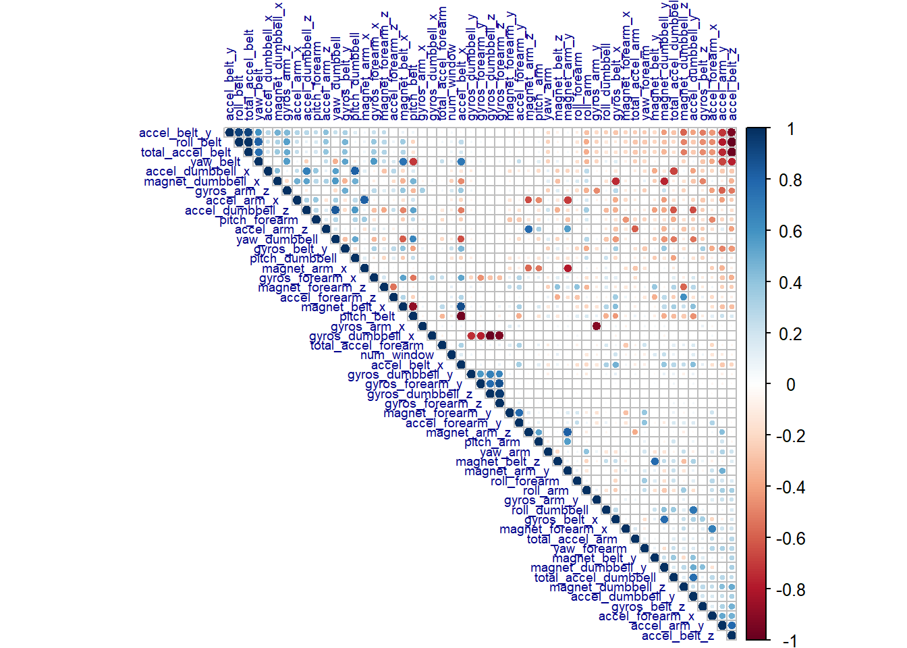
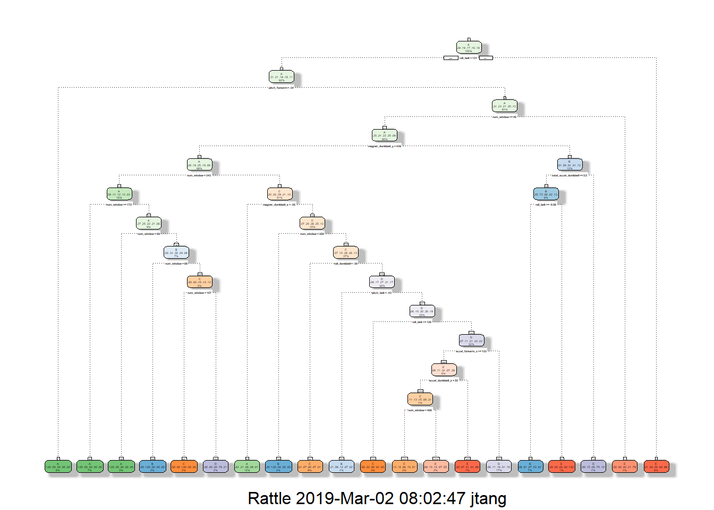
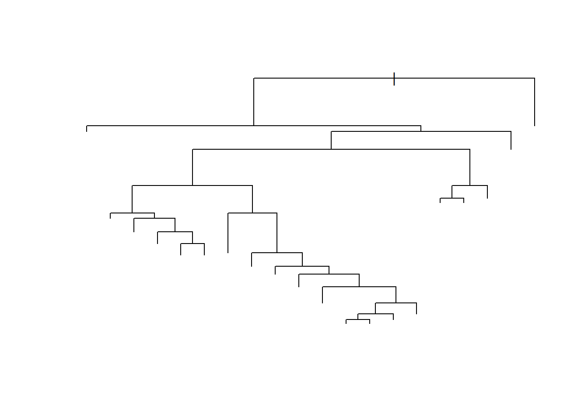
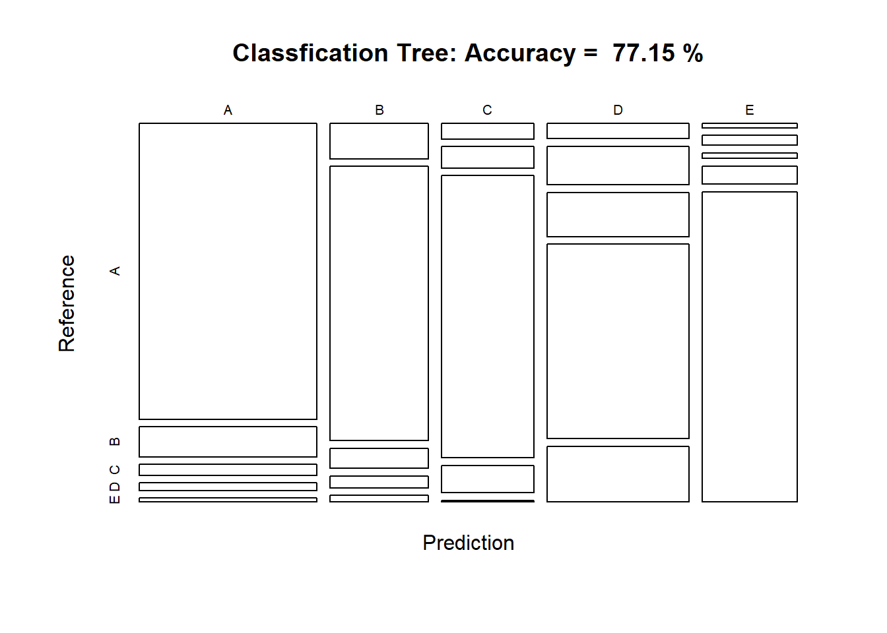
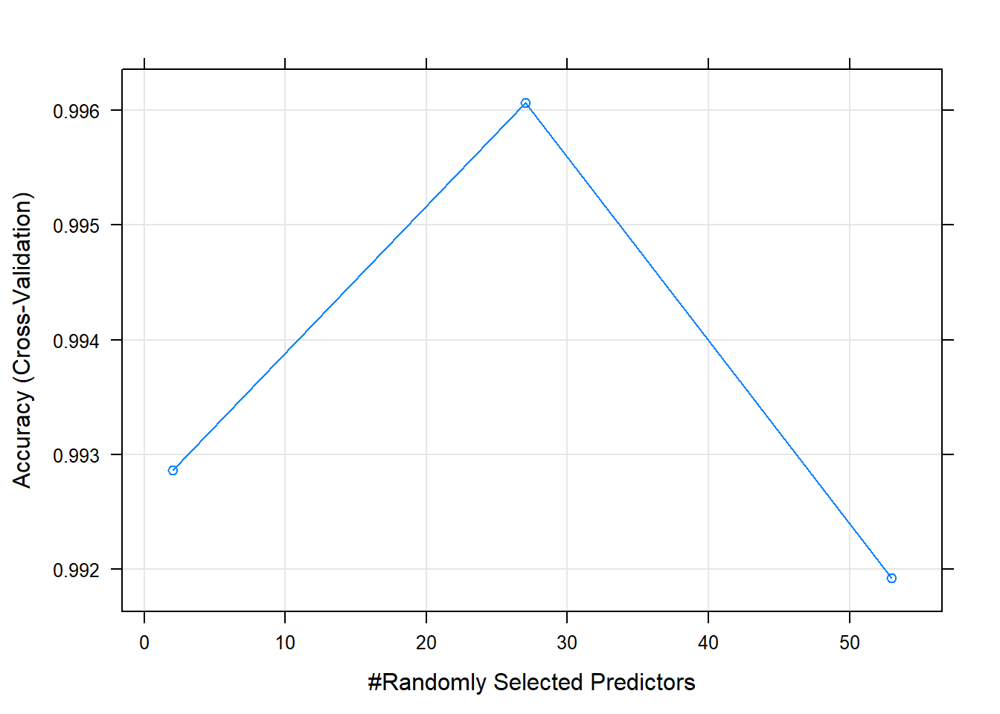
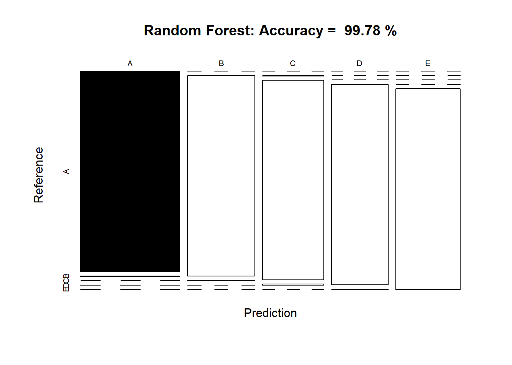
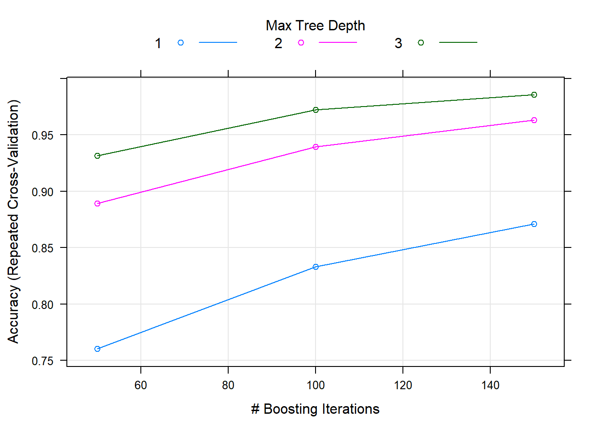
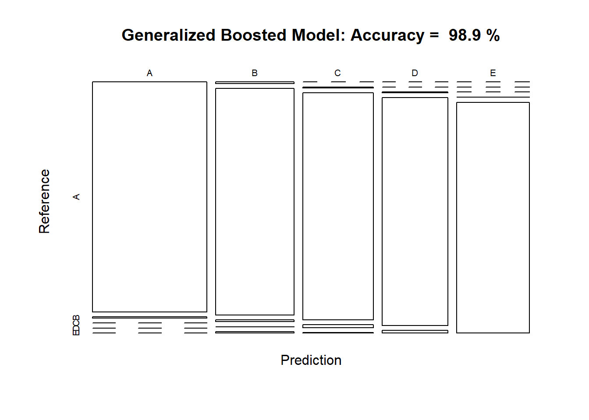

The goald of this project is to predict the manner in which they did the exercise.
The training data for this project are available here: https://d396qusza40orc.cloudfront.net/predmachlearn/pml-training.csv
The test data are available here: https://d396qusza40orc.cloudfront.net/predmachlearn/pml-testing.csv
Train set and Test Schema Verification
# Confirm both training set and test set contain identical variables
# - excluding variable 'classe' from training set
# - excluding variable 'problem_id' from test set
all.equal(colnames(raw_train)[1:(ncol(raw_train) - 1)],
colnames(raw_test)[1:(ncol(raw_train) - 1)])## [1] TRUETrainging data set
# trainging data
dim(raw_train)## [1] 19622 160# testing data
dim(raw_test)## [1] 20 160# head(dt_train)library(caret)
library(gbm)
library(randomForest)
library(rpart)
library(rpart.plot)
library(corrplot)
library(rattle)
library(RColorBrewer)
library(e1071)
set.seed(2019)dt_train <- raw_train[, colSums(is.na(raw_train)) == 0]
dt_test <- raw_test[, colSums(is.na(raw_test)) == 0]
# dimension of training set
dim(dt_train)## [1] 19622 60colnames(dt_train)## [1] "X" "user_name" "raw_timestamp_part_1"
## [4] "raw_timestamp_part_2" "cvtd_timestamp" "new_window"
## [7] "num_window" "roll_belt" "pitch_belt"
## [10] "yaw_belt" "total_accel_belt" "gyros_belt_x"
## [13] "gyros_belt_y" "gyros_belt_z" "accel_belt_x"
## [16] "accel_belt_y" "accel_belt_z" "magnet_belt_x"
## [19] "magnet_belt_y" "magnet_belt_z" "roll_arm"
## [22] "pitch_arm" "yaw_arm" "total_accel_arm"
## [25] "gyros_arm_x" "gyros_arm_y" "gyros_arm_z"
## [28] "accel_arm_x" "accel_arm_y" "accel_arm_z"
## [31] "magnet_arm_x" "magnet_arm_y" "magnet_arm_z"
## [34] "roll_dumbbell" "pitch_dumbbell" "yaw_dumbbell"
## [37] "total_accel_dumbbell" "gyros_dumbbell_x" "gyros_dumbbell_y"
## [40] "gyros_dumbbell_z" "accel_dumbbell_x" "accel_dumbbell_y"
## [43] "accel_dumbbell_z" "magnet_dumbbell_x" "magnet_dumbbell_y"
## [46] "magnet_dumbbell_z" "roll_forearm" "pitch_forearm"
## [49] "yaw_forearm" "total_accel_forearm" "gyros_forearm_x"
## [52] "gyros_forearm_y" "gyros_forearm_z" "accel_forearm_x"
## [55] "accel_forearm_y" "accel_forearm_z" "magnet_forearm_x"
## [58] "magnet_forearm_y" "magnet_forearm_z" "classe"# dimension of test set
dim(dt_test)## [1] 20 60colnames(dt_test)## [1] "X" "user_name" "raw_timestamp_part_1"
## [4] "raw_timestamp_part_2" "cvtd_timestamp" "new_window"
## [7] "num_window" "roll_belt" "pitch_belt"
## [10] "yaw_belt" "total_accel_belt" "gyros_belt_x"
## [13] "gyros_belt_y" "gyros_belt_z" "accel_belt_x"
## [16] "accel_belt_y" "accel_belt_z" "magnet_belt_x"
## [19] "magnet_belt_y" "magnet_belt_z" "roll_arm"
## [22] "pitch_arm" "yaw_arm" "total_accel_arm"
## [25] "gyros_arm_x" "gyros_arm_y" "gyros_arm_z"
## [28] "accel_arm_x" "accel_arm_y" "accel_arm_z"
## [31] "magnet_arm_x" "magnet_arm_y" "magnet_arm_z"
## [34] "roll_dumbbell" "pitch_dumbbell" "yaw_dumbbell"
## [37] "total_accel_dumbbell" "gyros_dumbbell_x" "gyros_dumbbell_y"
## [40] "gyros_dumbbell_z" "accel_dumbbell_x" "accel_dumbbell_y"
## [43] "accel_dumbbell_z" "magnet_dumbbell_x" "magnet_dumbbell_y"
## [46] "magnet_dumbbell_z" "roll_forearm" "pitch_forearm"
## [49] "yaw_forearm" "total_accel_forearm" "gyros_forearm_x"
## [52] "gyros_forearm_y" "gyros_forearm_z" "accel_forearm_x"
## [55] "accel_forearm_y" "accel_forearm_z" "magnet_forearm_x"
## [58] "magnet_forearm_y" "magnet_forearm_z" "problem_id"dt_train <- dt_train[, -(1:5)]
dt_test <- dt_test[, -(1:5)]
# dimension of training set
dim(dt_train)## [1] 19622 55# dimension of test set
dim(dt_test)## [1] 20 55near_zero <- nearZeroVar(dt_train)
dt_train <- dt_train[, -near_zero]
dim(dt_train)## [1] 19622 54Partition training set into 70% as train data for the modeling process, and 30% as test data for the model validation. The original test set remains unchanged.
model_train_split <- createDataPartition(dt_train$classe, p = 0.7, list = FALSE)
model_train = dt_train[model_train_split, ]
model_test = dt_train[-model_train_split, ]dim(model_train)## [1] 13737 54dim(model_test)## [1] 5885 54corr_matrix <- cor(model_train[, -54])
corrplot(corr_matrix,
order="FPC", method = 'circle', type='upper',
tl.cex = 0.6, tl.offset = 0.5, tl.col = 'darkblue')
The highly correlated variables are shown in dark circle in the figure above.
The names of highly correlated variables are
names(model_train)[findCorrelation(corr_matrix, cutoff = 0.75)]## [1] "accel_belt_z" "roll_belt" "accel_belt_y"
## [4] "total_accel_belt" "accel_dumbbell_z" "accel_belt_x"
## [7] "pitch_belt" "magnet_dumbbell_x" "accel_dumbbell_y"
## [10] "magnet_dumbbell_y" "accel_dumbbell_x" "accel_arm_x"
## [13] "accel_arm_z" "magnet_arm_y" "magnet_belt_z"
## [16] "accel_forearm_y" "gyros_forearm_y" "gyros_dumbbell_x"
## [19] "gyros_dumbbell_z" "gyros_arm_x"To model the regressions, there are three commonly applied algorithms: 1. classification tree 2. Random Forest 3. Generalized Boosted Model
I will examine the performance of each algorithm and choose the best algorithm for this project.
model_decisionTree <- rpart(classe ~., data = model_train, method = 'class')
fancyRpartPlot(model_decisionTree)
# plot the model
plot(model_decisionTree)
# prediction on test data
predict_decisionTree <- predict(model_decisionTree, model_test, type='class')
result_decisionTree <- confusionMatrix(predict_decisionTree, model_test$classe)
result_decisionTree## Confusion Matrix and Statistics
##
## Reference
## Prediction A B C D E
## A 1466 149 55 38 19
## B 97 755 55 33 18
## C 40 55 726 71 4
## D 60 154 175 774 222
## E 11 26 15 48 819
##
## Overall Statistics
##
## Accuracy : 0.7715
## 95% CI : (0.7605, 0.7821)
## No Information Rate : 0.2845
## P-Value [Acc > NIR] : < 2.2e-16
##
## Kappa : 0.7111
## Mcnemar's Test P-Value : < 2.2e-16
##
## Statistics by Class:
##
## Class: A Class: B Class: C Class: D Class: E
## Sensitivity 0.8757 0.6629 0.7076 0.8029 0.7569
## Specificity 0.9380 0.9572 0.9650 0.8758 0.9792
## Pos Pred Value 0.8489 0.7881 0.8103 0.5588 0.8912
## Neg Pred Value 0.9500 0.9221 0.9399 0.9578 0.9470
## Prevalence 0.2845 0.1935 0.1743 0.1638 0.1839
## Detection Rate 0.2491 0.1283 0.1234 0.1315 0.1392
## Detection Prevalence 0.2935 0.1628 0.1523 0.2353 0.1562
## Balanced Accuracy 0.9069 0.8100 0.8363 0.8394 0.8681# plot the prediction result
plot(result_decisionTree$table,
col = result_decisionTree$byClass,
main = paste('Classfication Tree: Accuracy = ',
round(result_decisionTree$overall['Accuracy'],4) * 100,
'%'))
The accuracy of above model is 77.15% and its out-of-sample error is 22.85%.
model_randomForest <- train(classe ~.,
data = model_train,
method = 'rf',
trControl = trainControl(method="cv",
number=4,
verboseIter = FALSE))
model_randomForest$finalModel##
## Call:
## randomForest(x = x, y = y, mtry = param$mtry)
## Type of random forest: classification
## Number of trees: 500
## No. of variables tried at each split: 27
##
## OOB estimate of error rate: 0.19%
## Confusion matrix:
## A B C D E class.error
## A 3905 0 0 0 1 0.0002560164
## B 6 2650 1 1 0 0.0030097818
## C 0 4 2392 0 0 0.0016694491
## D 0 0 7 2244 1 0.0035523979
## E 0 1 0 4 2520 0.0019801980# plot the model
plot(model_randomForest)
# prediction on test data
predict_randomForest <- predict(model_randomForest, model_test)
result_randomForest <- confusionMatrix(predict_randomForest, model_test$classe)
result_randomForest## Confusion Matrix and Statistics
##
## Reference
## Prediction A B C D E
## A 1674 3 0 0 0
## B 0 1134 2 0 0
## C 0 2 1024 5 0
## D 0 0 0 959 1
## E 0 0 0 0 1081
##
## Overall Statistics
##
## Accuracy : 0.9978
## 95% CI : (0.9962, 0.9988)
## No Information Rate : 0.2845
## P-Value [Acc > NIR] : < 2.2e-16
##
## Kappa : 0.9972
## Mcnemar's Test P-Value : NA
##
## Statistics by Class:
##
## Class: A Class: B Class: C Class: D Class: E
## Sensitivity 1.0000 0.9956 0.9981 0.9948 0.9991
## Specificity 0.9993 0.9996 0.9986 0.9998 1.0000
## Pos Pred Value 0.9982 0.9982 0.9932 0.9990 1.0000
## Neg Pred Value 1.0000 0.9989 0.9996 0.9990 0.9998
## Prevalence 0.2845 0.1935 0.1743 0.1638 0.1839
## Detection Rate 0.2845 0.1927 0.1740 0.1630 0.1837
## Detection Prevalence 0.2850 0.1930 0.1752 0.1631 0.1837
## Balanced Accuracy 0.9996 0.9976 0.9983 0.9973 0.9995# plot the prediction result
plot(result_randomForest$table,
col = result_randomForest$byClass,
main = paste('Random Forest: Accuracy = ',
round(result_randomForest$overall['Accuracy'],4) * 100,
'%'))
The accuracy of above model is 99.78% and its out-of-sample error is only 0.22% which is every good.
model_GBM <- train(classe ~.,
data = model_train,
method = 'gbm',
trControl = trainControl(method="repeatedcv",
number= 5,
repeats = 1,
verboseIter = FALSE),
verbose = FALSE)
model_GBM$finalModel## A gradient boosted model with multinomial loss function.
## 150 iterations were performed.
## There were 53 predictors of which 53 had non-zero influence.# plot the model
plot(model_GBM)
# prediction on test data
predict_GBM <- predict(model_GBM, model_test)
result_GBM <- confusionMatrix(predict_GBM, model_test$classe)
result_GBM## Confusion Matrix and Statistics
##
## Reference
## Prediction A B C D E
## A 1666 8 0 0 0
## B 8 1127 8 1 6
## C 0 4 1015 13 2
## D 0 0 3 949 11
## E 0 0 0 1 1063
##
## Overall Statistics
##
## Accuracy : 0.989
## 95% CI : (0.9859, 0.9915)
## No Information Rate : 0.2845
## P-Value [Acc > NIR] : < 2.2e-16
##
## Kappa : 0.986
## Mcnemar's Test P-Value : NA
##
## Statistics by Class:
##
## Class: A Class: B Class: C Class: D Class: E
## Sensitivity 0.9952 0.9895 0.9893 0.9844 0.9824
## Specificity 0.9981 0.9952 0.9961 0.9972 0.9998
## Pos Pred Value 0.9952 0.9800 0.9816 0.9855 0.9991
## Neg Pred Value 0.9981 0.9975 0.9977 0.9970 0.9961
## Prevalence 0.2845 0.1935 0.1743 0.1638 0.1839
## Detection Rate 0.2831 0.1915 0.1725 0.1613 0.1806
## Detection Prevalence 0.2845 0.1954 0.1757 0.1636 0.1808
## Balanced Accuracy 0.9967 0.9923 0.9927 0.9908 0.9911# plot the prediction result
plot(result_GBM$table,
col = result_GBM$byClass,
main = paste('Generalized Boosted Model: Accuracy = ',
round(result_GBM$overall['Accuracy'],4) * 100,
'%'))
The accuracy of above model is 98.90% and its out-of-sample error is only 1.10% which is also good.
The accuracy of above 3 regression modeling algorithm are:
As Random Forest produce the highest accuracy among the 3 algorithms. I will apply it to predict the result from test dataset.
predict_final <- predict(model_randomForest, dt_test)
predict_final## [1] B A B A A E D B A A B C B A E E A B B B
## Levels: A B C D E